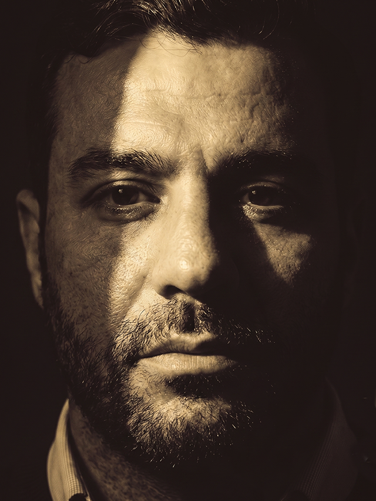
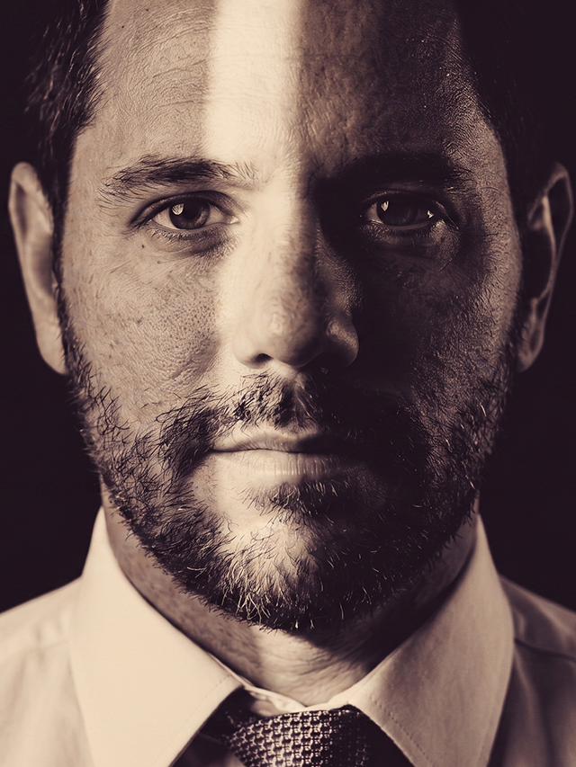

Compliance penal: por que a prevenção é a melhor defesa
Como programas de integridade bem estruturados reduzem a exposição de empresas e executivos a processos criminais.
Ler MaisAdvocacia Penal Empresarial e Familiar
Assessoria estratégica a empresas, executivos e famílias, conduzida diretamente pelos sócios em cada etapa da causa.
Fale ConoscoÁrea de Atuação
Atuação preventiva junto a empresas e executivos, com programas de compliance penal, auditorias internas e pareceres técnicos que reduzem riscos antes que se tornem litígios.
Saiba MaisDefesa técnica em inquéritos, ações penais e processos administrativos sancionadores, com atuação estratégica perante tribunais e órgãos de fiscalização em todas as instâncias.
Saiba MaisPlanejamento sucessório, holdings familiares, inventários e partilhas conduzidos com discrição, equilibrando proteção patrimonial e preservação das relações familiares.
Saiba MaisAdvocacia Zacarelli
Há mais de 20 anos, a Advocacia Zacarelli constrói uma trajetória pautada pelo rigor técnico e pelo compromisso pessoal com cada cliente. Nascido na advocacia penal empresarial, o escritório expandiu sua atuação para acompanhar a complexidade dos negócios e das famílias que atende.
Hoje, unimos consultoria preventiva e atuação contenciosa em uma disciplina única — estruturando programas de compliance, defendendo interesses em processos criminais e conduzindo planejamento patrimonial e sucessório por meio de holdings familiares. Cada caso é acompanhado diretamente pelos sócios, com a discrição e o método que a advocacia de alto nível exige.
Notícias e Publicações
Como programas de integridade bem estruturados reduzem a exposição de empresas e executivos a processos criminais.
Ler MaisEntenda como a estruturação societária antecipa conflitos e simplifica a transmissão de patrimônio entre gerações.
Ler MaisPrincipais impactos das mudanças legislativas na condução de investigações e processos que envolvem pessoas jurídicas.
Ler MaisEquipe

Sócio Fundador · Direito Penal Empresarial
Sócio · Contencioso Penal

Sócio · Direito de Família e Sucessões

Advogado Associado · Compliance
Primeira Consulta
Atendimento direto pelos sócios, com discrição e clareza sobre os próximos passos do seu caso.